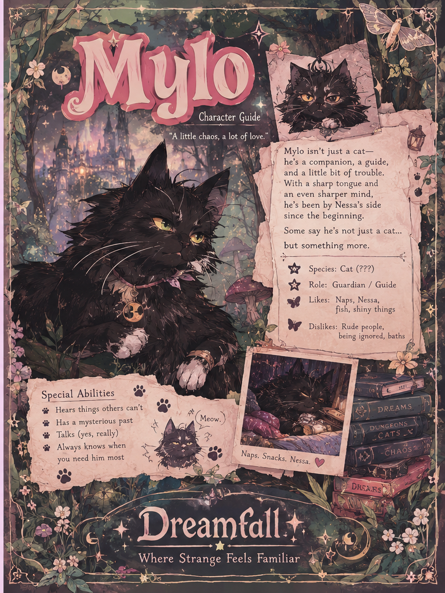

Mylo
A little chaos, a lot of love.

Species: Cat (???)
Role: Guardian / Guide
Likes: Naps, Nessa, fish, shiny things
Dislikes: Rude people, being ignored, baths
Mylo
Before Nessa
Mylo remembers a world that Nessa never knew.
He remembers the world before the war, before the ruins, and before the forests became filled with things that should not exist. He remembers when the land felt different—more familiar, perhaps, though even he struggles to explain exactly what changed.
He rarely talks about those days unless Nessa asks.
And even then, he leaves things out.
Before the War
Long before Nessa was born, Mylo wandered the world.
He never liked staying in one place for too long. He traveled between towns, forests, and settlements, collecting stories and meeting people along the way.
He was always curious.
Perhaps too curious.
Mylo had a habit of wandering into places he shouldn't have been and asking questions that were better left unanswered.
He remembers the world as being much more alive than it is now.
There were crowded towns, busy roads, strange little shops, enormous structures, and people who believed the future would continue much as the present had.
They were wrong.
The War
Mylo remembers the war.
He doesn't talk about it often.
When Nessa asks what happened, he usually gives her the simplest version of the story.
There was a conflict.
People fought.
The land changed.
And eventually, the war ended.
But Nessa has noticed that Mylo never tells the same story twice.
Sometimes details change.
Sometimes he becomes strangely quiet.
And sometimes, when she asks about something specific, he simply looks away and tells her that she doesn't need to worry about it.
There are things Mylo remembers that he wishes he didn't.
And there are things he remembers that he isn't sure he is allowed to forget.
After the War
When the war ended, Mylo continued wandering.
The world he knew was gone.
Places he remembered were destroyed or abandoned. Roads had disappeared beneath overgrowth. Buildings that had once been filled with people stood empty.
Some places were changed in ways that Mylo couldn't explain.
He learned to avoid certain areas.
He learned which ruins were safe to explore and which ones were better left alone.
And somewhere along the way, Mylo stopped looking for a place to call home.
At least, that's what he told himself.
The Little Girl in the Forest
Years later, Mylo heard crying in the forest.
He almost kept walking.
Almost.
Instead, he followed the sound.
That's when he found Nessa.
She was small, frightened, and completely alone.
Mylo had seen plenty of terrible things during his life.
But something about seeing a child abandoned in the middle of the forest stopped him.
He approached her slowly.
Nessa was terrified of him at first.
Then Mylo climbed into her lap.
He didn't know why he did it.
Perhaps he simply knew that she needed someone.
So he stayed.
Becoming Family
Mylo never intended to raise a child.
He certainly never expected to become someone's entire world.
But that's what happened.
He taught Nessa how to survive.
He taught her about the forest, the ruins, magic, and the strange creatures that inhabited the world around them.
He answered her endless questions.
He told her stories.
And when she asked about the world before the war, he gave her pieces of his memories.
Never all of them.
Just enough.
Nessa became fascinated by the past.
Mylo became increasingly aware that the past might eventually come looking for them.
The Stories He Leaves Out
Nessa thinks Mylo tells her everything.
He doesn't.
There are names he never mentions.
Places he refuses to visit.
Stories that always seem to end before the important part.
Sometimes Nessa catches him staring into the distance as though he's remembering something far away.
When she asks what he's thinking about, he smiles.
"Nothing worth worrying about."
She doesn't believe him.
But she knows better than to push.
For now.
Mylo's Promise
Mylo doesn't know how long he will be able to keep the past away from Nessa.
He knows that the world still holds secrets.
He knows that some of the things he thought were gone may not be gone at all.
And most importantly, he knows that Nessa's story may be connected to the world he has spent years trying not to remember.
But Mylo made a promise the day he found her.
He would protect her.
Whatever happens.
Even if protecting Nessa means keeping the truth from her.
Even if one day she hates him for it.
Because Mylo has already watched the world lose too much.